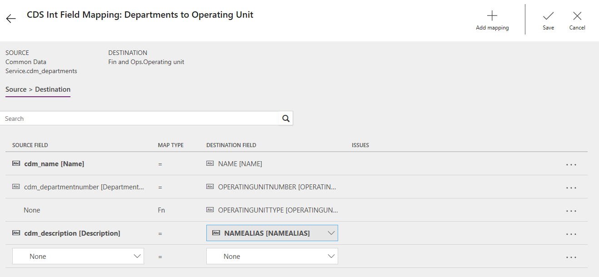
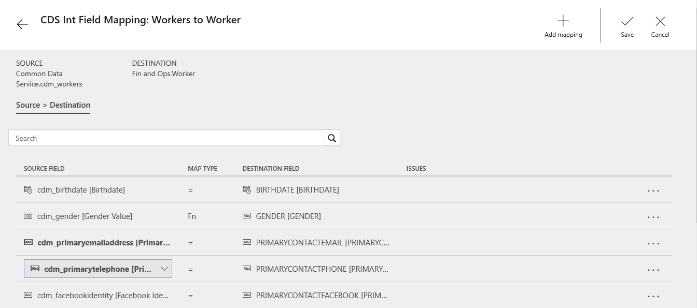

Neuerungen oder Änderungen in Dynamics 365 Talent – Core HR (6. Dezember 2018)
[!include[rename-banner](~/includes/cc-data-platform-banner.md)]Build 8.1.2071
In diesem Thema werden die Funktionen beschrieben, die in Core HR entweder neu oder geändert sind.
Plattformupdate 22 für Finance and Operations
Export nach 1 Mio. Zeilen in Excel
Der Export nach Excel kann nun konfiguriert werden, um Benutzern zu erlauben, bis 1 Mio. Zeilen aus einem Raster in Talent zu exportieren, eine bedeutende Erhöhung vom vorherigen Unterzeichnungslimit mit 10.000 Zeilen zu exportieren.
Neue personalisierte Symbolleiste
Die Personalisierungssymbolleiste in Plattformupdate 22 für Finance and Operations erfolgte, um Benutzern zu helfen, ihre eigenen Erfahrungen leichter in Talent anzupassen. Die folgenden Änderungen wurden vorgenommen:
- Der Name jedes Personalisierungstools wird nun zusammen mit einem Symbol angezeigt, das Benutzern Swift, das Tool unterstützt zu ermitteln, das, bestehen sie sind, zu verwenden.
- Die Beschreibung für die Nutzung des aktuellen Tool wird nun auch angezeigt,die Benutzern hilft zu veranschaulichen, wie die erforderlichen Personalisierungen erfolgt.
- Die gesamte Personalisierungssymbolleiste kann auf dem Bildschirm per Drag and Drop in einer bestimmten Region am linken äußeren Rand der Symbolleiste verschoben werden. Dies ermöglicht es Benutzern, Elemente zu personalisieren, die im Vorfeld vom der Symbolleiste undeutlich vorgenommen wurden.
Optimiert die Filterungserfahrung „gehört zu“
Der "Ist einer der" Filterungsoperatoren ist verfügbar für die meisten Felder, wenn die Filterbereich- und Rasterheaderdropdownlisten verwendet werden. Der Operator ermöglicht es Benutzern, dass ein Feld auf Grundlage mehrere Werte zu filtern ist. Eine neue und verbesserte Erfahrung für den Operator „ist eine von“ ist in Plattformupdate 22 für Finance and Operations verfügbar. Um mehr zu verfahren, gehen Sie zu Optimierte Filterungserfahrung.
Listen aus Excel in Felder mit " ist eine vom Typ" Operator zu kopieren
Für unterschiedliche Aufgaben kann der Benutzer eine Liste von Werten in Excel haben, die diese verwenden möchten, um Daten im Talent zu filtern. Beispielsweise hat möglicherweise ein Personalverwaltungsbenutzer einen Satz von Mitarbeitern aus einem Bericht identifiziert, die zusätzliche Studien im System benötigen und es wäre für diese Nutzer ideal, die Liste direkt von Excel in ein Filterfeld in Talent zu kopieren.
Mit dem Plattformupdate 22 für Finance and Operations erkennt die Funktion „ist eine von“ im Filterbereich und der Spaltenrasterfilterung nun Listen, die von Excel kopiert werden, so dass diese dann direkt in ein Filterfeld eingefügt werden können. Dies umfasst eine Sammlung von Werten, die aus verschiedenen Zeilen und Spalten in Excel kopiert werden. Weitere Informationen über diese Funktion finden Sie unter Listen aus Excel in Felder mit " ist eine vom" einzufügen.
Vorschau
GB-Lohnintegration zwischen Talent und Dayforce konfigurieren
Die Integration zwischen Talent und Ceridian Dayforce ist in der Vorschau für das Vereinigte Königreich verfügbar. Die folgenden Thema enthalten weitere Informationen Konfigurieren Sie die Lohnintegration zwischen Talent und Dayforce.
Bald verfügbar
Sonderurlaub und Abwesenheit: Zukünftige Urlaub- und Planungsurlaubsalden
Wenn die Änderungen vorgenommen wurden, können Mitarbeiter Freizeit planen und zukünftige Freizeitanforderungen anfragen, ohne dass sich dies auf aktuelle Freizeitbilanz auszuwirkt, da die Darstellung der Freizeit ebenfalls ändert.
Der verfügbare angezeigte Saldo ist der Betrag der verfügbaren Freizeit einschließlich Abgrenzungen von heute und alle genehmigten Urlaubanforderungen zur Endzeit.
Wenn die Möglichkeit zur Planung freigegeben wird, ändert sich der angezeigte Saldo, um den aktuellen Saldo der Freizeit einschließlich Abgrenzungen von heute und Anforderungen darzustellen. Mitarbeiter und Manager finden diese aktualisierten Salden im Mitarbeiter- und Manager-Self-Service im Fenster Freizeit und Freizeitsalden. Leiter der Personalabteilung finden diese aktualisierten Salden in Personen und unter Zugeordneten Urlaubpläne des Mitarbeiters.
Andere Änderungen
Kündigungscode ist nicht auf Arbeitskraftpositionszuweisungsdatensatz aufgeführt
Eine Änderung ist implementiert worden, die im Positionszuweisungsdatensatz den Ursachencode für den Kündigungsprozesses aufführt.
Prüfung für die Personalnummer, die zusätzliche Details der gebräuchlichen Anforderungen erfordert
Zusätzliche Informationen werden angezeigt, wenn die Nummernkreise verwendet werden, um das Problem besser zu verstehen, wenn eine neue Nummer nicht generiert werden kann.
Anhangschaltflächen nicht mehr für Arbeitskräfte verfügbar
Änderungen können vorgenommen werden, um Anlagen zu korrigieren. Wenn Sie einen neuen Anhang für eine Arbeitskraft hinzufügen, sind die Schaltflächen Neu und Bearbeiten verfügbar, wenn Infoboxen im Feld Arbeitskraftfenster offen sind.
Bekannte Probleme
Prüffehler in der Integration mit Finance
Die folgenden Probleme wurden für die aktuelle Vorlage für Integrierung von Talent mit Finance identifiziert. Eine neue Vorlage wird bald veröffentlicht und für alle neuen Integrationsprojekten angewendet, die erstellt werden. Für vorhandene Integrationsprojekt können die Aufgabenzuordnungen aktualisiert werden. Weitere Informationen finden Sie in der aktualisierten Zuordnung.
Note
Die Stellenposition für die übergeordneten Arbeitsaufgabeaufgabenzuweisung integriert keine Daten. Dies ist ein Problem, das derzeit untersucht wird. Es gibt keine Problemumgehung in der aktuellen Zuordnung.
Die Abteilung für die Organisationseinheitsaufgabe benötigt die folgenden aktualisierte Zuordnungen.
| Bestehendes Datenquellenfeld | Neue Quellfeldkennung |
|---|---|
| cdm_description (Beschreibung) | cdm_name (Name) |
Ein zusätzliche Zuordnung muss ebenfalls hinzugefügt werden. Wählen Sie das letzte Feld Kein aus, um den anschließenden Zuordnung hinzuzufügen.
| Quellfeld | Zielfeld |
|---|---|
| cdm_description (Beschreibung) | NAMEALIAS (NAMEALIAS) |
Die aktualisierten Zuordnungen sollten wie folgt aussehen.

Die Aufgaben für die Stellendetailaufgabe benötigt die folgenden aktualisierte Zuordnungen.
| Bestehendes Datenquellenfeld | Neue Quellfeldkennung |
|---|---|
| cdm_name (Name) | cdm_description (Beschreibung) |
| cdm_name (Beschreibung) | cdm_jobdescription (Stellenbeschreibung) |
Die aktualisierten Zuordnungen sollten wie folgt aussehen.

Die Arbeiter zu Arbeiteraufgaben benötigt die folgenden aktualisierte Zuordnungen.
| Bestehendes Datenquellenfeld | Neue Quellfeldkennung |
|---|---|
| cdm_emailaddress1 (E-Mail Adresse 1) | cdm_primaryemailaddress (Primäre E-Mail-Adresse |
| cdm_telephone1 (Telefon 1) | cdm_primarytelephone (Primäres Telefon) |
Das Geschlechtsfeld muss auch aktualisiert werden. Wählen Sie den Zuordnungstyp F-N (Funktion) für Geschlecht aus und aktualisieren Sie die folgenden Wertzuordnungen.
| Common Data Service-Wert | Finance and Operations-Wert | | ------------|------------------ -----------| | 75440000 | Männlich | | 75440001 | Weiblich | | 75440002 | Keine | | 75440003 | Nicht spezifisch |
Die aktualisierten Zuordnungen sollten wie folgt aussehen.
